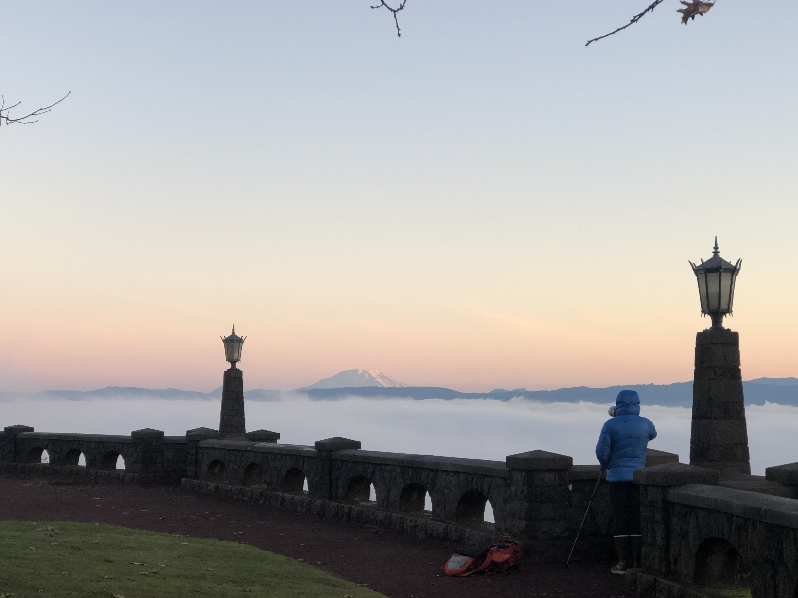

Rocky Butte
The View: The placement of the park in this location, with its 600-foot elevation, provides an incredible 360-degree view of the area, including Downtown Portland to the west, Mount St. Helens to the north and the Columbia River Gorge to the east.
The History: The Butte is part of the Boring Lava Field, a group of over 30 cinder cones in Oregon and Washington. The site was formerly home to Rocky Butte Jail.